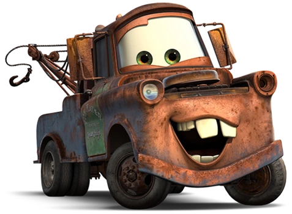
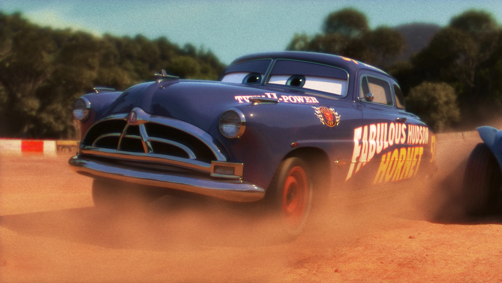
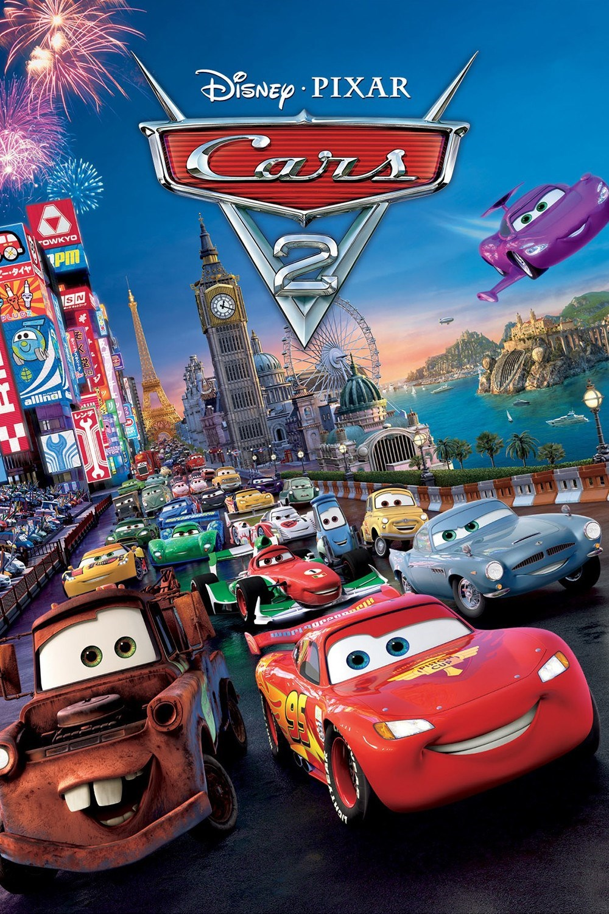
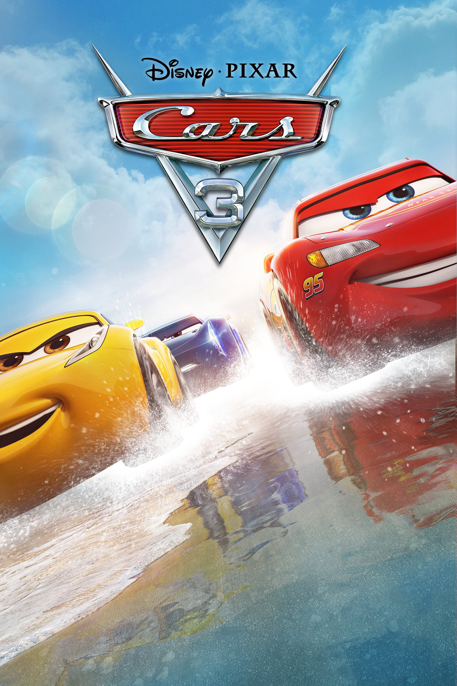

Descripción
Rayo McQueen es una prometedora figura del automovilismo, que está a punto de conseguir su primera Copa
Pistón, aun siendo un novato. Sin embargo, el día que se dirige hacia el circuito, tiene un accidente y
acaba perdido en un pueblo llamado Radiador Springs, medio abandonado en el que se ve obligado a
quedarse. Allí descubrirá muchos valores que parecía no tener y su vida dará un vuelco absoluto. Se dará
cuenta de que todo lo que el parecía tener no tiene importancia en ese lugar y que lo que realmente
importa no es el éxito o poder, sino el esfuerzo por lograrlo y el compañerismo.
Director
Nombre: John Alan Lasseter
Fecha de nacimiento: 12 de enero de 1957
Lugar de nacimiento: Hollywood, Los Ángeles, California, Estados Unidos
Es un animador, director de cine, productor estadounidense y miembro fundador de los estudios Pixar,
donde supervisó todas las películas como productor ejecutivo.
Personajes
Rayo McQueen

También conocido como el rayo, es veloz, tenaz, implacable, inexperto y nuetro protagonista. A punto
de ganarle la
copa piston a los mejores en su temporada de rookie, simplemente un animal.
CACHAU
El rey

Leyenda absoluta del deporte con 7 copas Pistón, un referente para todos, excepto para chick, el
cuál le provoca un accidente en su última carrera
Chick

Está en la peli por que tiene que estar, es el antagonista y un asqueroso. Provoca el accidente de
el rey, y por favor quien se cree para decir CACHICA. la peor victoria en la historia de la copa
Pistón
Mate

El mejor amigo de Mcqueen, un genio donde los halla, posiblemente el mejor personaje de la película
que más decir de el, simplemente Mate.
Doc hudson

Otra absoluta leyenda del deporte cuenta en su haber con tres copas Pistón consecutivas, haste que
un trágico accidente frenó su carrera en seco. Este actúa como mentor de McQueen en radiator Springs
y como su jefe de equipo en la última carrera de la temporada.
Secuelas
Cars 2

Rayo McQueen y la grúa Mate viajan al extranjero para participar en el primer Campeonato Mundial en
el que se decidirá cuál es el coche más rápido de la tierra. Mate se convertirá en un espía secreto
y McQueen competirá contra los mejores coches. El campeonato los llevará a Japón, París, Londres y
por último, a Italia. Sin embargo, estarán muy ocupados para poder disfrutar de los placeres de cada
lugar.
Cars 3

Eclipsado por los autos jóvenes, el veterano Rayo McQueen ha sido expulsado del deporte que tanto
ama. Sin embargo, no se rendirá tan fácilmente, con la ayuda de sus amigos, Rayo aprende trucos
nuevos para vencer al arrogante Jackson Storm, el rival que lo humilló.